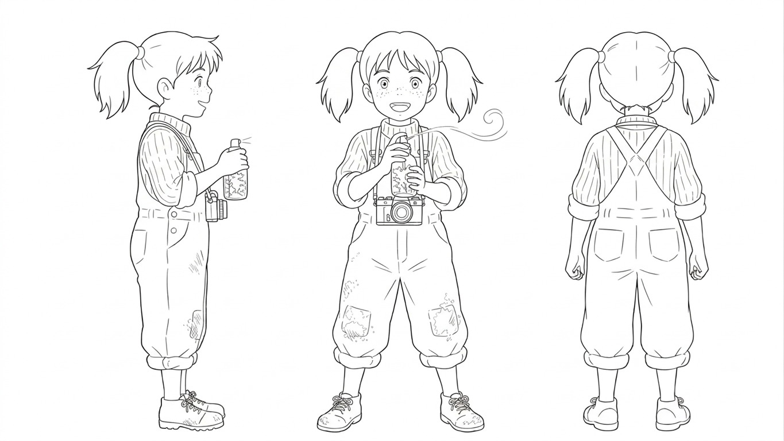

◧ 产品项目概述
本项目旨在展示如何通过 AIGC 缩短从创意到产品的周期。项目涵盖了从 Prompts 工程化到最终 UI 实现的全过程。重点攻克了 AI 生成资产在 Web 端的高效加载与动画渲染，将传统的静态作品集转化为具有强交互感的数字化产品。
🎯 核心工作流架构 (Workflow Architecture)
- ▪ 精准控制下的角色设计 (Character Design)
- ▪ 场景构建与空间氛围 (Scene & Environment)
- ▪ 动画资产转化 (Motion Assets)
- ▪ 响应式交互界面 (Web Development)
💡 项目深度亮点描述 (Key Takeaways)
品牌叙事能力： 展示你如何将这些 AI 资产串联成一个有逻辑的动画故事，而不仅仅是零散的图片堆砌。
MANIFESTO
"AI 是画笔，
审美才是灵魂。"
不要让 AI 决定最终的画面，利用精确的 Prompt 与 ControlNet 建立设计师的绝对控制权。
◧ 核心技术栈与控制力
本图量化评估了本人对业界主流 AIGC 工具（涵盖图生视频、剪辑合成、动态设计等方向）的掌握程度，分值基于项目实践与操作效率综合得出，用于直观呈现当前技能矩阵。
◧ 视觉开发与造型 / Visual Development
本区域展示了如何利用 AIGC 技术构建一套严谨的动画视觉标准。通过 即梦AI 与 LoRA 模型训练，呈现了角色从『创意灵感』到『生产标准』的进化过程。
角色三视图线稿设计
角色设计规格书
小禾 (Xiao He)- 基础特征：亚裔少女，圆润的杏眼（Puppy Eyes），带有几颗浅色雀斑。发型为凌乱感双马尾。
- 剪影与构图：A字型剪影。宽松的背带裤在脚踝处收紧，形成上窄下宽的结构。
- 服装设计：灰绿色粗帆布背带裤 (Canvas) + 姜黄色针织衫 + 不对称的中筒袜。
- 关键道具：爷爷的老式双反相机 (Twin-lens Reflex) 与 苔藓喷雾瓶。
- 动态与神态：重心前倾的“踮脚”姿势。表情多为专注的“观察状”：半张的小嘴。

角色三视图线稿
视觉导演备注 (Design Notes)
◧ 环境概念设计 / Environment Concept Design
本模块通过 AIGC 构建了一套逻辑自洽、层次分明的动画场景，利用 Tiled Diffusion（分块渲染） 与 Outpainting（AI 扩图） 技术展示了从极致的近景构图到广阔的远景的质感。
场景设计 / Environment Setting
Qing Shan Zhen
- 远景/天际线：密林天际线与和小茶馆 (Mid-dist forest & Tea House)。深郁的远古森林形成高耸的围合边界，右侧中景处，一座古朴的和风二层木质茶室依附于岩壁，其屋顶为经典的紫色青瓦，回廊有微光。
- 中景/核心区：古老大木棉树与树洞 (Sacred Great Tree & Root Cave)。场景绝对的视觉重心。巨大的、具有解剖学美感的古树根系盘根错节，形成一个天然的拱形入口。入口上方和周围覆盖着厚重的绿色苔藓、小花和攀缘植物。
- 近景/前景：遮挡关系与细节刻画 (Foregound details & Composition)。地面由沙土、落叶和少量散落的樱花瓣组成。左下角有两块红砖，右下角有一把生锈的铁质洒水壶和两朵落土的红木棉花。
场景备注 (Ref/Technical)
◧ 技术落地指标 (Technical Highlights)
数据是最直观的说服力。此对比图表展示了该AIGC项目对比传统设计的流程在时间、产出和成本上的差异。
结论：利用 AI 辅助，方案交付周期缩短 75%，且能提供 5 倍 的备选方案数量。